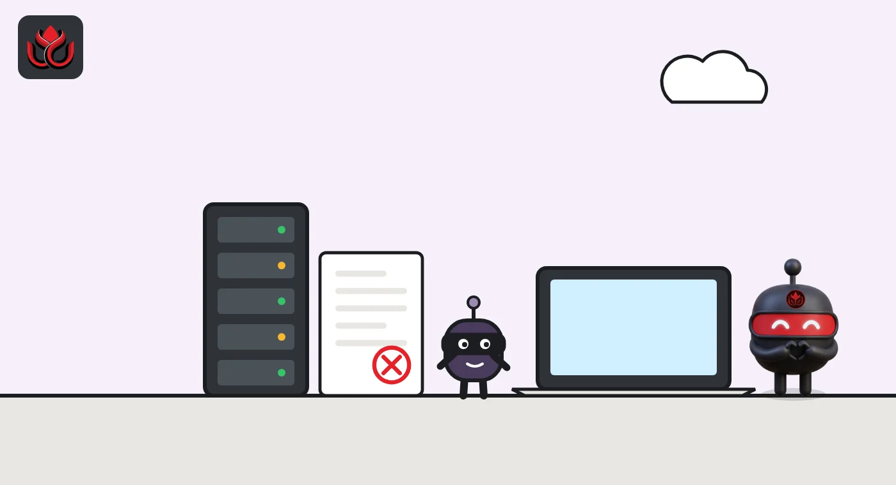
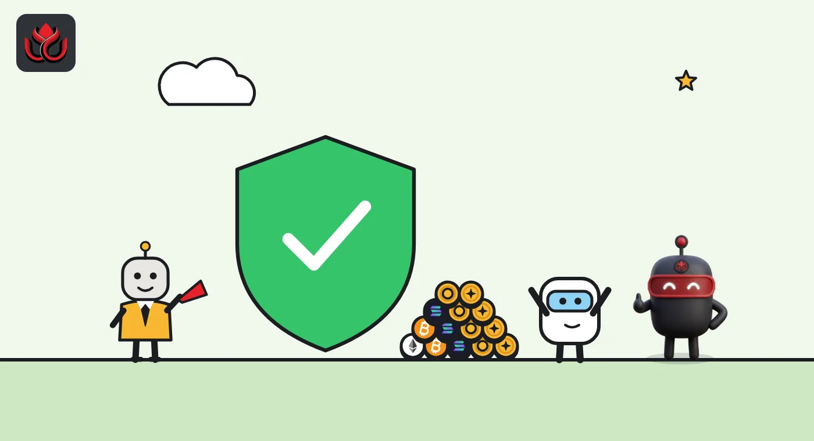

Bitget lost $388 million with no keys stolen. How did fake withdrawals get through?
Attackers used an unpatched flaw in a third-party security tool, took real staff logins and wrote fake withdrawal orders into Bitget's wallet servers. Bitget says its Protection Fund covers the loss and user balances were not touched.
Key points
- About $388 million left Bitget's online wallets on September 24, 2026, across 12 addresses and 11 chains.
- Bitget says no private keys were stolen: attackers used an unpatched flaw in a third-party security product to get real staff logins and plant fake withdrawal orders.
- CertiK counts it as September's biggest crypto incident, about half of all losses that month, and Bitget says users were covered by its Protection Fund.
- DeepSea's hack tracker shows funds from the Bitget theft and from the October Binance breach reaching the same address, linking the two cases on-chain.
What DeepSea's data shows
DeepSea's on-chain data links this theft to October's Binance breach. On its page for the Binance case, DeepSea reports that funds from that hack and from the Bitget exploit were sent to the same address, so the two cases are connected on-chain.
DeepSea's hack tracker puts the loss at $387.50 million, in line with Bitget's figure, but follows the money on only four chains: Ethereum, TRON, the XRP Ledger and Zcash. Bitget lists 12 addresses on 11 chains. DeepSea says the attackers split the funds across 1,870 wallets up to four hops from the first attacker wallet, swapped about $129.18 million, mostly into the stablecoins USDS (26%) and DAI (14%), and moved $11.06 million to other chains, including $4.26 million through THORChain. The tracked wallets last moved funds 16 days before our check.
DeepSea's exchange figures do not agree with each other. The tracker's headline says only about $10,900 reached exchanges, while its detail shows $5.43 million sent to a Binance deposit address. DeepSea's weekly report for October 5 to 11 counts 376 exchange deposits worth $4.71 million from the Bitget hack in that week alone.
On attribution, DeepSea's summary says Bitget and blockchain investigators link the attack to North Korea-linked groups, and that there is no official US finding. Bitget's incident page does not name an attacker.
Data: DeepSea (desea.io), checked November 1, 2026, 11:07 p.m. ET.
What was taken
Attackers drained about $388 million from Bitget's online wallets on September 24, 2026, and according to the exchange they did it without stealing a single private key. The money left Bitget's hot and warm wallets, which are kept online so an exchange can process withdrawals quickly. According to Bitget's incident page, the first unauthorized transfers went out at 2:31 p.m. ET. Its reconciliation system flagged a mismatch at 3:05 p.m. ET, and the risk system then automatically blocked withdrawal requests across the platform.
That $388 million is Bitget's final verified figure. The money came from 12 wallet addresses on 11 chains: Ethereum, XRP Ledger, Zcash, TRON, Arbitrum, Optimism, Base, BNB Chain, Avalanche, Algorand and Celestia. Twelve assets were affected, among them XRP, ETH, USDT, USDC, ZEC and the gold token XAUt. Bitget calls it the first incident of its kind in eight years of operation.
The exchange's core message has not changed. It says private keys were not compromised and cold wallets, which hold most platform assets, were not affected. It also says customer balances stayed accurate and the loss is covered by its Protection Fund, not passed on to users.
How the attackers got in
Bitget's account of the attack is unusual because no wallet key was stolen. The company says the attackers exploited a zero-day bug, meaning a flaw nobody had found or patched yet, in a security product supplied by a third party. Through it they reached critical internal management systems and took genuine staff credentials. Because the identity was real, the logins looked normal to Bitget's systems.
With those high-level credentials, the attackers reached the wallet backend servers and wrote forged withdrawal commands into them. The wallet system treated them as ordinary withdrawals, so the usual risk checks were skipped before the withdrawal records were created. Afterward, the attackers deleted traces of the fake commands. Bitget says no common viruses or malware were used and describes it as a highly sophisticated targeted attack.
Two outside firms, Mandiant (part of Google Cloud) and SlowMist, released reports on September 30. Bitget says both found the attack path broadly consistent with its own findings and confirmed that the compromised third-party product led to access to its wallet environment. Bitget says it has fixed the flaw, reset all internal credentials, tightened access to sensitive permissions, told the vendor and disabled the related feature. It has not named the vendor, and it has not named any attacker on its incident page.

Timeline
First unauthorized transfers leave Bitget hot and warm wallets
Reconciliation system flags anomalies; withdrawals blocked platform-wide
BTC withdrawals reopen; Bitget commits to refill its Protection Fund to at least $300 million within a week
ETH and EVM network withdrawals reopen; 47th proof-of-reserves report shows a 131% ratio
USDT withdrawals reopen; Mandiant and SlowMist reports released; fund refilled above $300 million
All remaining crypto, fiat and P2P withdrawals reopen
Latest update to Bitget's incident page
Withdrawals, the fund and the size of the loss
Bitget reopened withdrawals in stages and says the order applied to all users equally, with no priority for VIP tiers. By 5:00 a.m. ET on September 28, it says it had processed 9,585 BTC withdrawal transactions totaling about 4,098 BTC.
The Protection Fund is Bitget's reserve for platform-wide losses. Bitget says it refilled the fund to more than $300 million by September 30, as it had promised two days earlier. Its Protection Fund page now shows 3,705 BTC, valued at $290 million at the time of our check, because the dollar value moves with the bitcoin price.
Security firm CertiK's dashboard lists Bitget as the largest incident of September 2026, at $387.5 million. That is 50.2% of the $771.5 million in total losses CertiK recorded for the month.
Bitget hack: the key figures
US$ million
Sources: Bitget incident page, Bitget Protection Fund, CertiK dashboard

Getting the money back
Bitget publishes the attacker-controlled addresses on its incident page for EVM chains, the XRP Ledger, Zcash and TRON, along with a live tracking dashboard. It offers a bounty of 5% of any amount frozen or recovered to anyone whose help directly leads to a freeze or recovery. It also names Bybit's LazarusBounty program as one of its main channels for recovery work.
Bitget says some assets have been frozen with help from other exchanges, blockchain projects and security firms. It has not published a total, saying the amounts keep changing as the investigation goes on.
Readers should note some loose ends in Bitget's own disclosures. The 47th proof-of-reserves update on September 29 gave a total reserve ratio of 131% across 19 assets, but the same page also cites 127% elsewhere. The page gives two figures for the Protection Fund too: 3,705 BTC in its summary and 5,500 BTC, valued at more than $464 million, in its FAQ. Bitget says a formal security report with fuller technical details will follow. As of November 2, its incident page had last been updated on October 13.
LC Insight analysis
This section is our reading of the facts above, not a statement of fact.
- The key detail is that nothing cryptographic broke. The attackers did not need keys because they could make the system believe fake orders were real. The weak point has moved from wallets to the internal tools around them.
- Expect every exchange to take a hard look at third-party security software. A product meant to protect Bitget became the way in, and platforms using similar vendors should be asking questions now.
- Refilling the Protection Fund fast probably limited the damage to trust. Mismatched reserve and fund figures on Bitget's own incident page do not help, and the promised formal report will decide how this is judged.
What's next
- Publication of Bitget's formal security report
- Any official attribution by law enforcement
- Bitget's frozen and recovered totals
- Whether the third-party vendor is named or issues its own disclosure
Disclaimer. This article is based on public information and the sources listed below as of the update time shown. It is for information only and is not investment, legal or tax advice. Figures may change as companies and authorities publish new data.